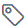

As an administrator or user with appropriate permissions, you can create and edit the
agent, application, component, and resource tags from the Tags
tab.
-
Click .
-
Select a tag type such as Agent Tags, and click Create
Tag.
-
Configure the tag in the Create Tag window:
| Parameter |
Description |
| Name |
Identifies the tag name and is included in the Tags column when
added. |
| Description |
Conveys more information about the tag. |
| Color |
Defines the tag color that is displayed in the UI. |
-
Save your changes.
The tag lists in the Agent Tags page.
Note:
- Tags once created can only be edited and not deleted.
- Another way to create a tag is by navigating to the respective agent, application, component, or
resource. Click Add Tag

icon, select Add New Tag, and provide the tag details as described
in the table above.